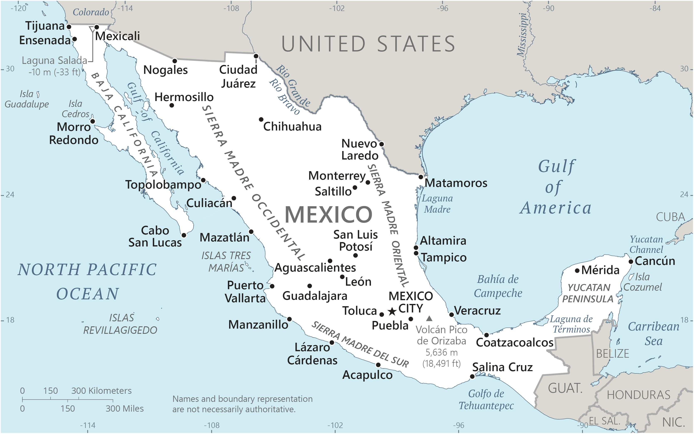

Genel Bilgiler
Meksika, Kuzey Amerika’da yer alan federal bir cumhuriyettir. Başkenti Mexico City’dir. Yaklaşık 129 milyon nüfusa sahiptir. Resmî dili İspanyolca’dır ve para birimi Meksika Pezosu (MXN)’dur. Meksika, zengin kültürel mirası, tarihi şehirleri ve doğal kaynakları ile bilinir.
Meksika, kuzeyde ABD, güneydoğuda Guatemala ve Belize ile çevrilidir; batıda Pasifik Okyanusu, doğuda ise Meksika Körfezi ve Karayip Denizi’ne kıyısı vardır. Yüzölçümü yaklaşık 1.964.375 km²’dir. Ülke coğrafyası dağlar, yaylalar, çöller ve tropik bölgelerden oluşur. Önemli nehirleri Rio Grande, Lerma ve Usumacinta’dır.
Başkent: Mexico City
Kıta: Kuzey ve Güney Amerika
Yüzölçümü: 1.964.375 km²
Nüfus (2025): 128.9 milyon
Bayrak Anlamı: Meksika bayrağı dikey yeşil, beyaz ve kırmızı şeritlerden oluşur; ortadaki beyaz şeritte milli arma bulunur. Yeşil bağımsızlık ve umut, beyaz birlik ve barış, kırmızı ise kahramanlık ve kanı simgeler. Arma içinde bir kartal, yılanı gagasında tutarken kaktüs üzerinde durur ve Aztek mitolojisine dayanmaktadır. Bayrak 1968 yılında kabul edilmiştir.
Meksika Haritası
Ekonomi
Meksika ekonomisi sanayi, tarım ve hizmet sektörlerine dayanır. Sanayi alanında otomotiv, elektronik, gıda işleme ve petrol rafinerileri öne çıkar. Tarımda mısır, buğday, fasulye ve tropik meyveler önemlidir. Hizmet sektörü turizm, finans ve ticaret alanlarında gelişmiştir. Meksika, Kuzey Amerika serbest ticaret anlaşmaları ve doğal kaynakları ile ekonomik açıdan bölgesel bir güçtür.
| Yıl | İhracat (Milyar $) | İthalat (Milyar $) |
|---|---|---|
| 2019 | 450 | 500 |
| 2020 | 400 | 420 |
| 2021 | 480 | 520 |
| 2022 | 500 | 540 |
| 2023 | 510 | 550 |